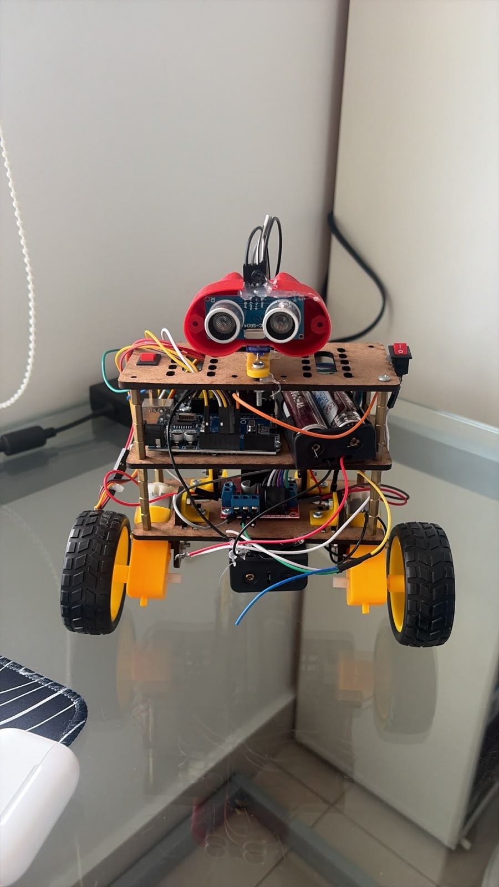
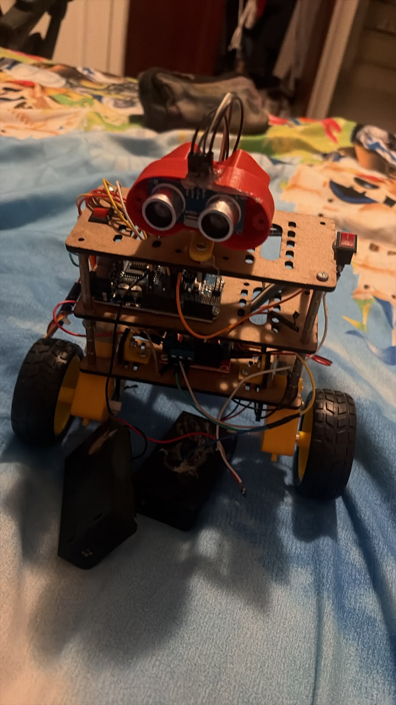
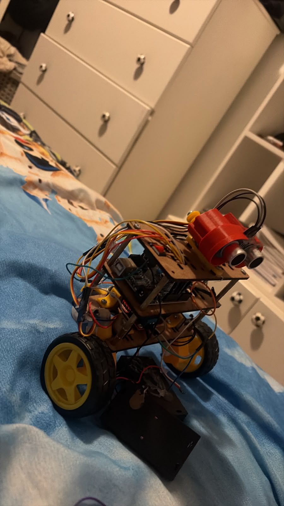
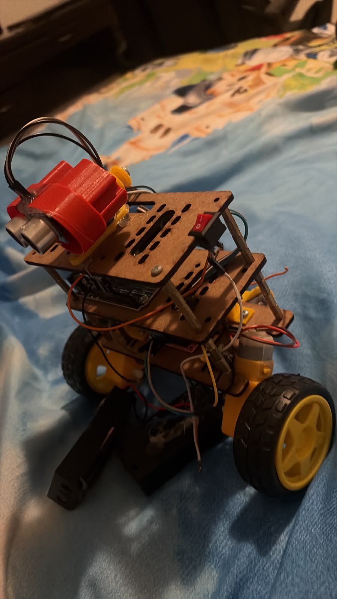

Educativas
Enseñanza de lógica de programación, electrónica y física en escuelas y universidades.
Este robot móvil está diseñado para navegar de forma autónoma en entornos desconocidos, detectando y evitando obstáculos con un sensor ultrasónico HC-SR04.

Este proyecto consiste en un robot móvil diseñado para navegar de forma autónoma en entornos desconocidos, detectando y evitando obstáculos mediante sensores ultrasónicos. Es ideal para fines educativos, demostraciones de robótica básica y prototipado de sistemas de navegación autónoma.
Fotografía 1: Vista frontal del robot mostrando el sensor ultrasónico y la estructura modular.
El robot opera mediante un ciclo continuo de detección, procesamiento y acción para evitar obstáculos en su camino.
Este robot sirve como plataforma para aprender conceptos de navegación autónoma y control de hardware.
Enseñanza de lógica de programación, electrónica y física en escuelas y universidades.
Base para proyectos avanzados como robots de limpieza o exploración.
Exhibición en ferias de ciencia o talleres de robótica.
Componentes principales utilizados en el robot y su función dentro del sistema.
Recomendaciones para mantener el robot en condiciones de operación seguras y confiables.
Precauciones clave para trabajar con el robot de evitación de obstáculos.
Trabajar siempre con el sistema desconectado de la fuente de energía y usar guantes aislantes al manipular voltajes superiores a 5V.
Verificar que los cables no estén desgastados y no conectar motores directamente al Arduino.
Mantener una superficie seca y libre de objetos metálicos, con buena iluminación.
Consejos para el cuidado de los componentes y el manejo seguro del robot.
Usar aire comprimido para eliminar polvo y no aplicar líquidos directamente sobre circuitos.
Multímetro, destornillador de precisión y pinzas de punta fina son esenciales.
Usar pulsera antiestática, trabajar sobre superficies protegidas y almacenar componentes en bolsas de aluminio.
Imágenes del robot y su montaje. La primera imagen muestra la vista frontal del robot.




Comparte tu opinión: ¿Este proyecto te genera placer o felicidad?
El feedback ayuda a mejorar el proyecto y a adaptar el diseño según las necesidades reales.
Todos los campos son obligatorios y se verifica que el email sea válido antes de enviar al backend.